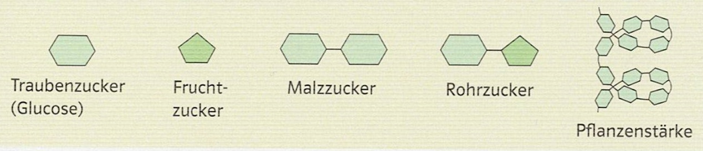
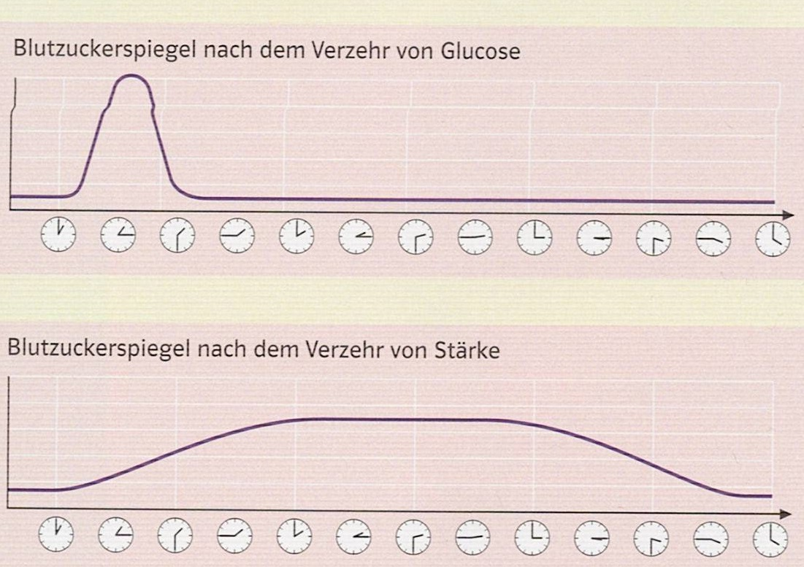
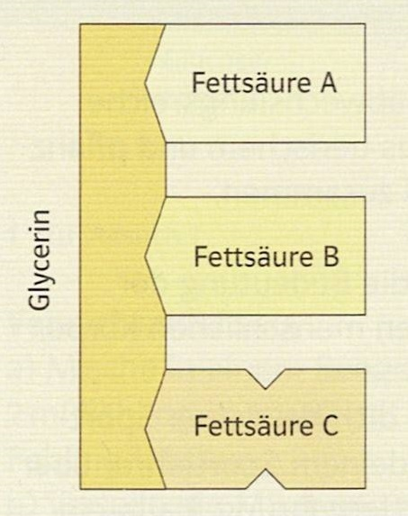
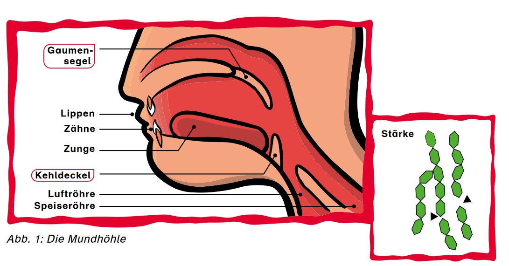
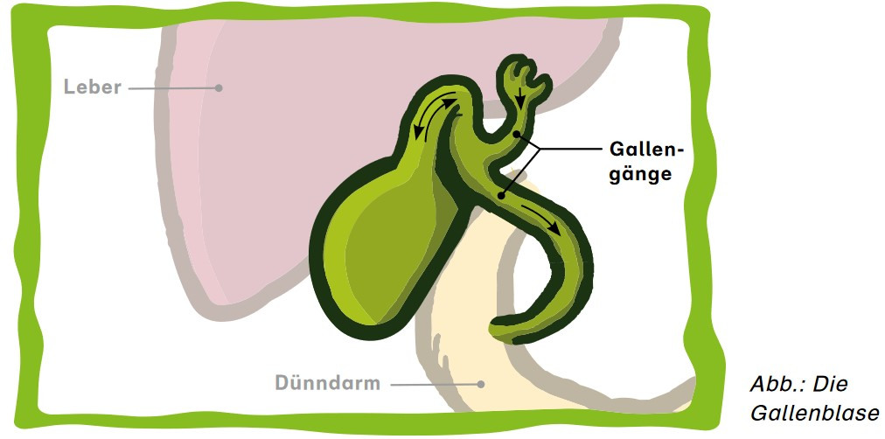
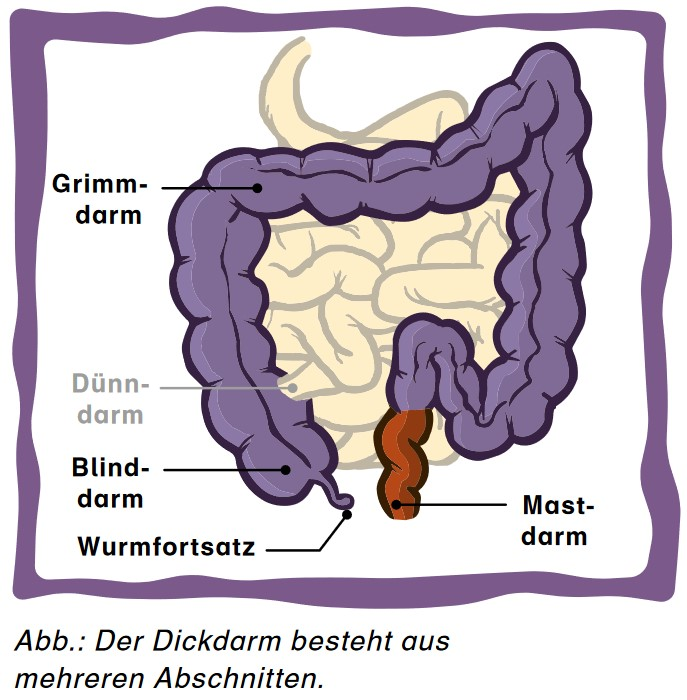

Ernährung und Verdauung
| Website: | Schulische Weiterbildung & Lernwelt @ VHS Essen |
| Kurs: | 1./2. Fachsemester Turbo 1 Frau Rollhäuser |
| Buch: | Ernährung und Verdauung |
| Gedruckt von: | Robin Fehlhaber |
| Datum: | Samstag, 19. September 2026, 19:58 |
1. Ernährung
Im Rahmen des Themas „Gesundheitsbewusstes Leben“ werden wir uns mit dem Einfluss der Ernährung auf unsere Gesundheit befassen. Dafür werden wir gemeinsam nicht nur unser Verdauungssystem unter die Lupe nehmen, sondern auch herausfinden, woraus sich unsere Nahrung zusammensetzt und was davon gut für uns ist und was vielleicht auch nicht.
1.1. Bestandteile von Lebensmitteln

Menschen müssen für ihre Lebensvorgänge wie zum Beispiel Wachstum oder Bewegung Nahrung zu sich nehmen. Diese Nahrungsmittel (auch Lebensmittel genannt) setzen sich aus verschiedenen Bestandteilen zusammen. Sie werden nach ihrer Bedeutung für den Körper in Gruppen zusammengefasst. Besonders wichtig für die Ernährung sind Kohlenhydrate, Fette und Eiweiße (Proteine). Sie werden deshalb Nährstoffe genannt. Neben den Nährstoffen sind in unseren Nahrungsmitteln Ergänzungsstoffe zu finden. Zu ihnen zählen Vitamine und Mineralstoffe. Sie sind reichlich in Obst und Gemüse enthalten und wirken bereits in kleinen Mengen. Vitamine sind an der Steuerung wichtiger Abläufe unserer Organe beteiligt und unterstützen den Körper gesund zu bleiben. Mineralstoffe bestehen aus Salzen und sind zum Beispiel für die Blut- und Knochenbildung wichtig. In Obst, Gemüse und Vollkornprodukten sind außerdem Ballaststoffe zu finden. Sie sind zwar nicht lebensnotwendig, beeinflussen aber das Wohlbefinden. Ballaststoffe werden im Verdauungssystem des Menschen nicht abgebaut. Im Magen und Darm quellen sie auf und verstärken so das Sättigungsgefühl und regen die Darmtätigkeit an. Ein letzter wichtiger Bestandteil unserer Nahrung ist Wasser. Es ist ein wichtiges Transport- und Lösungsmittel im Körper. Dieser besteht übrigens zu 50 - 60 % aus Wasser.
1.2. Nährstoffe
Man unterteilt die Kohlenhydrate in drei Gruppen: Einfach-, Zweifach- und Vielfachzucker. Die bekanntesten Einfachzucker sind Traubenzucker (Glucose) und Fruchtzucker. Vielfachzucker bestehen aus vielen Einfachzuckerbausteinen, die zu langen Ketten miteinander verbunden sind. Ein Beispiel hierfür ist Stärke.

Kohlenhydrate sind die wichtigsten Energielieferanten für den Körper. Traubenzucker wird schnell ins Blut aufgenommen und die Energie darin kann sofort genutzt werden. Allerdings reicht die Energie nur ca. eine halbe Stunde, dann ist der Einfachzucker verbraucht. Für längere sportliche Leistungen ist Glucose daher nicht geeignet. Stärke kann nicht sofort ins Blut aufgenommen werden. Sie muss zuerst in die einfachen Bausteine zerlegt werden. Dieser Vorgang dauert eine gewisse Zeit. Dafür reicht die Energie für einen längeren Zeitraum. So wird der Körper auch zwischen den Mahlzeiten und in der Nacht mit der notwendigen Energie versorgt.

Es gibt tierische und pflanzliche Fette. Chemisch gesehen bestehen Fette aus einem Molekül Glycerin und drei Fettsäuren. Ob ein Fett bei Raumtemperatur flüssig oder fest ist, hängt von der Art der Fettsäuren ab. Kurzkettige, ungesättigte Fettsäuren bilden flüssige Fette und sind für den Menschen gesünder. Langkettige, gesättigte Fettsäuren hingegen führen zu festen Fetten.

Fette sind die energiereichsten Nährstoffe. Zudem sind sie für den Aufbau neuer Zellen zuständig und schützen als Fettpolster gegen Stöße und Kälte. Außerdem sorgen sie dafür, dass die fettlöslichen Vitamine im Körper aufgenommen werden können. Je nach Alter, Körpergröße und Geschlecht sollte man zwischen 60 und 90 Gramm Fett pro Tag zu sich nehmen. Viele Menschen überschreiten diese Menge. Dann bildet der Körper Depotfett, meist an Bauch und Hüften. Diese Form der Fetteinlagerung ist ungesund und kann zu Übergewicht und Krankheiten wie Diabetes oder Herzinfarkten führen.
Eiweiße werden auch Proteine genannt. Jede Zelle unseres Körpers besteht zu großen Teilen aus Eiweißbausteinen. Deshalb nennt man sie Baustoffe des Körpers. Besonders viele Proteine sind in Muskeln, Haare und Nägel enthalten, aber auch bei der Bildung von Hormonen, Abwehrstoffen und der Blutgerinnung spielen sie eine wichtige Rolle.

Sie bestehen aus Aminosäuren. Davon gibt es 20 verschiedene. Jedes Eiweiß ist anders zusammengesetzt. Je nach Alter, Geschlecht und Gewicht sollte man ungefähr 45 bis 60 Gramm Eiweiß pro Tag zu sich nehmen. Eiweiß steck in vielen pflanzlichen (Erbsen, Bohnen, Nüsse, ...) und tierischen (Milch, Käse, Fisch, Fleisch, ...) Lebensmitteln.
1.3. Energie
Liegt man entspannt auf dem Sofa, braucht der Körper trotzdem Energie. Innere Organe wie das Herz, die Lunge oder der Darm arbeiten, auch wenn man ruht. Die Energiemenge, die der Mensch pro Tag bei völliger Ruhe zur Aufrechterhaltung seiner Körpertemperatur und -funktionen im Durchschnitt benötigt, nennt man Grundumsatz. Er ist bei jedem Menschen unterschiedlich und hängt zum Beispiel von den Faktoren Alter, Geschlecht, Größe oder Gewicht ab. Jedoch kann jeder Mensch sich seinen Grundumsatz vereinfacht mit folgender Formel selbst ausrechnen:
Frau:
Grundumsatz (in kcal pro Tag) = 21,6 x
Körpergewicht in kg
Mann: Grundumsatz (in kcal pro Tag) = 24 x
Körpergewicht in kg
Sobald ein Mensch denkt oder sich bewegt, steigt der Energiebedarf. Diese zusätzlich benötigte Energiemenge nennt man Leistungsumsatz. Grundumsatz und Leistungsumsatz zusammen ergeben den Gesamtumsatz.
Der Mensch braucht Energie zur
- Aufrechterhaltung des Stoffwechsels (Organe müssen funktionieren)
- Aufrechterhaltung der Körpertemperatur (Wärmehaushalt)
- Ausführung verschiedener körperlicher Tätigkeiten (Denken, Bewegungen)

Die täglich aufgenommene Energiemenge soll den Gesamtumsatz decken. Diese Energiemenge wird dem Körper mit den Nährstoffen zugeführt. Kohlenhydrate und Fette sind die wichtigsten Energielieferanten. Sie werden deshalb auch Betriebsstoffe genannt.
Nährstoffe werden auch zum Aufbau, zum Wachstum und zum Erhalt des Körpers benötigt. Im Körper werden ständig neue Zellen gebildet. So werden die äußeren Hautschichten regelmäßig erneuert. Auch Fingernägel und Haare wachsen ständig nach. Darmzellen werden nur ein bis zwei Tage alt. Als Baustoffe werden vor allem die Eiweißstoffe, aber auch Fette und Kohlenhydrate genutzt. Man bezeichnet sie als Baustoffe.
1.4. Gesunde Ernährung
Kein Lebensmittel enthält alle für unseren Körper lebensnotwendigen Nährstoffe, Vitamine, Mineralstoffe und Ballaststoffe in ausreichender Menge. Ernährungswissenschaftler empfehlen daher eine abwechslungsreiche Ernährung. Im Ernährungskreis sind die Lebensmittel in sieben Gruppen unterteilt. Je kleiner der Anteil der Gruppe im Kreis, desto weniger sollte von diesen Lebensmitteln verzehrt werden. Täglich sollte man etwa 1,5 Liter trinken. Besonders empfohlen werden Wasser und ungesüßte Tees.

Den größten Anteil haben Getreide, Getreideprodukte und Kartoffeln. Sie liefern vor allem die energiereichen Kohlenhydrate und Ballaststoffe. Zusammen mit vitamin- und mineralstoffreichem Gemüse und Obst bilden sie zu Dreivierteln den Hauptbestandteil der Ernährung. Zu einem Viertel kann die Nahrung aus tierischen Produkten (Milch, Milchprodukte, Fleisch, Fisch und Ei) bestehen. Diese Lebensmittel sind wichtige Eiweißquellen und liefern zusätzlich Fette und Mineralstoffe. Mit fetthaltigen Lebensmitteln wird auch der Bedarf an fettlöslichen Vitaminen gedeckt. Einen sehr kleinen Anteil im Ernährungskreis nehmen die fett-, zucker- und salzreichen Lebensmittel ein. Veganer ersetzen die tierischen Eiweißstoffe und Fette durch pflanzliche:

1.5. Hunger, Durst und Sättigung
Wir essen, wenn wir hungrig sind und hören auf, wenn wir satt sind. Stimmt das?
Viele verschiedene Faktoren beeinflussen die Nahrungsaufnahme. Wissenschaftler unterscheiden dabei zwischen inneren Signalen, äußeren Reizen und bewussten Entscheidungen. Innere Signale sind Durst, Hunger und Sättigung. Durst tritt auf, wenn dem Körper Flüssigkeit fehlt. Hunger entsteht, wenn der Magen leer ist oder wenn bestimmte Nährstoffe im Körper fehlen. Der Körper sendet dann Hungersignale aus, die die Aufnahme von Nahrung bewirken sollen. Das Sättigungsgefühl ist das Stoppsignal fürs Essen. Wie der Körper feststellt, ob er satt ist oder ob zum Beispiel bestimmte Nährstoffe fehlen, ist noch nicht vollständig erforscht. Als gesichert gilt zum Beispiel, dass der Körper die Dehnung der Magenwand misst. Zusätzlich messen Darm und Leber den Nährstoffgehalt einer Mahlzeit. Sie senden entsprechende Sättigungssignale an das Gehirn. Erste Sättigungsgefühle stellen sich meist 15 bis 20 Minuten nach Beginn einer Mahlzeit ein. Die oben beschriebene Zusammenarbeit zwischen Magen, Leber, Darm und Gehirn funktioniert sogar erst nach etwa 30 Minuten richtig gut. Daraus folgt: Nur wer langsam isst, spürt die Sättigung noch während des Essens und kann die Mahlzeit rechtzeitig beenden. Wer sich jedoch beim Essen durch Fernseher oder Handy ablenken lässt, kann die Sättigungssignale des Körpers leicht „überhören“.

Auch die Art der Nahrung beeinflusst die Sättigung: Langkettige Kohlenhydrate aus Kartoffeln, Getreide und Gemüse sowie Proteine aus Hülsenfrüchten, Fisch, Fleisch und Milchprodukten sorgen für eine gute und langanhaltende Sättigung. Vollkornprodukte, Gemüse und Obst enthalten darüber hinaus Ballaststoffe , die im Magen aufquellen und die Magenwände entsprechend dehnen.
Neben diesen inneren Signalen beeinflussen auch äußere Reize, ob, was und wie viel wir essen. Hierzu gehören z.B. der Duft des Essens, die Stimmung am Tisch oder die Zeit, die für eine Mahlzeit zur Verfügung steht. Aber auch die Erziehung, die Kultur, die Religion und Schönheitsideale spielen eine wichtige Rolle.
2. Verdauung
Jeden Tag gelangt eine Vielzahl unterschiedlicher Lebensmittel in den Körper. Er muss die darin enthaltenen Nährstoffe in kleinere Bausteine zerlegen und verwerten. Diesen Vorgang nennt man Verdauung. Im Mund, Magen und Darm laufen mechanische und chemische Prozesse ab: Die Speisen werden zerkleinert, mit Verdauungssäften durchmischt und als Nahrungsbrei durch den Körper transportiert. Die Verdauungssäfte enthalten Enzyme, die die Nährstoffe in ihre Bausteine aufspalten. Hauptsächlich im Dünndarm werden die Nährstoffbausteine durch die Darmwandzellen in den restlichen Körper aufgenommen. Diesen Vorgang nennt man Resorption. Von dort gelangen sie ins Blut und damit zu den Organen. Sie speichern die Nährstoffe, nutzen sie als Baustoffe oder zur Energiegewinnung. Nicht alle Nahrungsbestandteile können resorbiert werden. Die nicht verwertbaren Endprodukte gelangen in den Dickdarm, wo Bakterien sie weiter zerteilen. Manche Bakterien produzieren dabei wichtige Vitamine. Die Nahrungsreste verlassen den Darm als Kot.

Unter diesem Link finden Sie eine kleine Ausmal-Aufgabe zum Aufbau des Verdauungstrakts.
2.1. Enzyme
Enzyme helfen dem Körper die Nährstoffe zu zerlegen. Dabei ist ein Enzym immer auf einen bestimmten Nährstoff spezialisiert.

2.2. Mund und Speiseröhre
Die Nahrung kommt zuerst in den Mund. Sie wird dort mithilfe der Zähne zerkleinert. Das ist wichtig, damit der Darm die Nährstoffe später gut aufnehmen kann. Beim Kauen wird die Nahrung mit Speichel vermischt. Dadurch wird der Speisebrei feucht und kann leichter durch die Speiseröhre in den Magen gleiten. Der Speichel enthält neben viel Flüssigkeit auch das Enzym Amylase. Dieses kann lange Kohlenhydratketten (z. B. Stärke aus Nudeln oder Kartoffeln) in Zweifachzucker aufspalten. Die Verdauung beginnt also bereits im Mund.

Mehr als 20 Muskeln sorgen gemeinsam mit dem Kehldeckel dafür, dass der Speisebrei beim Schlucken in die Speiseröhre und nicht in die Luftröhre gelangt. In der Speiseröhre wird der Speisebrei ebenfalls mithilfe von Muskeln weiter in den Magen transportiert. Diesen Vorgang nennt man Peristaltik.
2.3. Magen
Der Magen sammelt den Speisebrei aus der Speiseröhre, mischt ihn mit Magensaft und zerkleinert ihn weiter. Schlecht gekaute Nahrung bereitet dem Magen mehr Arbeit.
Der Magensaft enthält Salzsäure und das Enzym Pepsin. Unter dem Einfluss von Salzsäure verändern die in der Nahrung enthaltenen Proteine ihre räumliche Struktur. Das Pepsin kann so besser auf die Proteine einwirken und diese spalten. Dabei verhindert die Magenschleimhaut, dass der Magen sich selbst verdaut. Die Salzsäure tötet zusätzlich Bakterien ab und schützt den Körper so vor Krankheiten. Außerdem zerstört sie das Enzym Amylase.
Der Schließmuskel (Pförtner genannt) am unteren Ende des Magens sorgt dafür, dass der Speisebrei portionsweise in den Dünndarm abgegeben wird.

2.4. Dünndarm
.png)
Der Dünndarm vermischt den Speisebrei aus dem Magen mit Verdauungssäften. Diese stammen unter anderem aus der Gallenblase und der Bauchspeicheldrüse. Der Gallensaft hilft bei der Verdauung von Fetten. Der Saft der Bauchspeicheldrüse enthält Verdauungsenzyme. Diese Enzyme spalten die Nährstoffe aus der Nahrung in kleinste Bausteine auf (z. B. Aminosäuren, Einfachzucker, Fettsäuren). Die Darmwand nimmt diese Bausteine auf und leitet sie an das Blut weiter. Auch Wasser (zum Beispiel aus Getränken) gelangt über die Darmwand in den Körper. Die Muskeln der Darmwand bewegen sich wellenartig und schieben so die restliche, noch nicht verdaute Nahrung in Richtung Dickdarm weiter.
2.5. Oberflächenvergrößerung des Dünndarms
Die innere Dünndarmoberfläche ist durch Falten und kleinere Wandausstülpungen (Darmzotten) stark vergrößert. Dadurch vergrößert sich auch die Kontaktfläche zum Nahrungsbrei. So können in kurzer Zeit viele Nährstoffteilchen aus dem Dünndarm über die Wand der Darmzotten in das Blut gelangen und im gesamten Körper verteilt werden.


2.6. Gallenblase und Bauchspeicheldrüse
Gallenblase

Für die gelblichgrüne Farbe des Gallensaftes ist Bilirubin verantwortlich. Das ist ein Abbauprodukt des roten Blutfarbstoffes. Bakterien im Dickdarm bauen das Bilirubin weiter ab. Dabei entsteht die für den Kot typische Färbung.
Bauchspeicheldrüse
 Die Bauchspeicheldrüse gibt Bauchspeichel in den Dünndarm ab. Er neutralisiert dort den sauren Speisebrei aus dem Magen. Der Saft der Bauchspeicheldrüse enthält außerdem verschiedene Verdauungsenzyme. Sie spalten Kohlenhydrate (Amylase), Proteine (Tripsin) und Fette (Lipasen) in kleinste Bausteine. Damit die Bauchspeicheldrüse sich nicht selbst verdaut, produziert sie die Verdauungsenzyme als inaktive Vorstufen. Diese werden erst im Dünndarm durch ein Enzym der Dünndarmwand aktiviert.
Die Bauchspeicheldrüse gibt Bauchspeichel in den Dünndarm ab. Er neutralisiert dort den sauren Speisebrei aus dem Magen. Der Saft der Bauchspeicheldrüse enthält außerdem verschiedene Verdauungsenzyme. Sie spalten Kohlenhydrate (Amylase), Proteine (Tripsin) und Fette (Lipasen) in kleinste Bausteine. Damit die Bauchspeicheldrüse sich nicht selbst verdaut, produziert sie die Verdauungsenzyme als inaktive Vorstufen. Diese werden erst im Dünndarm durch ein Enzym der Dünndarmwand aktiviert.
2.7. Dickdarm
Der Dickdarm ist der letzte Teil des Verdauungssystems. Seine Bewegungen durchmischen den Speisebrei. Die Darmwand nimmt dabei Wasser aus dem Speisebrei auf und gibt es dem Körper zurück. Der Speisebrei wird so eingedickt. Er heißt jetzt Kot. Im Dickdarm leben Bakterien, die man als Darmflora bezeichnet. Die Bakterien spalten einen Teil der Nahrungsreste auf. Dabei können übel riechende Gase entstehen. Der letzte Teil des Dickdarms, der Mastdarm, sammelt den Kot. Mithilfe eines Schließmuskels am Ende des Mastdarms kann der Mensch kontrollieren, wann er seinen Darm entleert.
